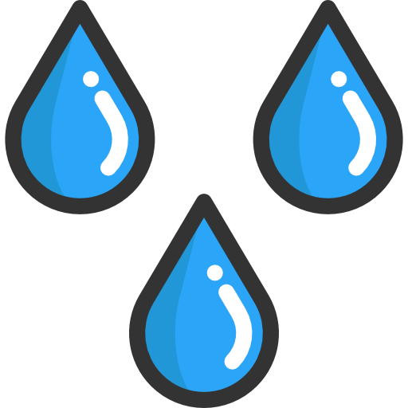
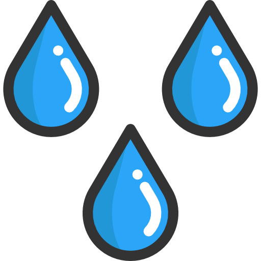
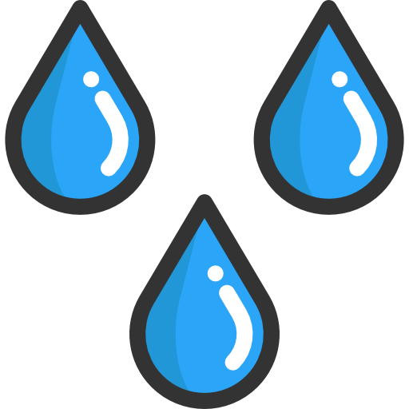

Cables Submarinos
Impacto ambiental en los océanos

 


Impacto ambiental en los océanos

Los cables submarinos de telecomunicaciones son infraestructuras clave que permiten la transmisión de datos entre continentes. Se encuentran en el lecho marino y están diseñados para soportar condiciones extremas del océano.
Estos cables contienen fibras ópticas que transportan señales de luz convertidas en datos, lo que permite una comunicación global de alta velocidad. Están recubiertos por capas protectoras para resistir la presión del agua y posibles daños.
Más del 95% del tráfico de Internet mundial se transmite a través de estos cables, lo que los hace fundamentales para la conectividad global, el comercio, la investigación y las comunicaciones internacionales.